# import standard Python packages
import os
import sys
import subprocess
sys.path.append(
subprocess.check_output(["grass", "--config", "python_path"], text=True).strip()
)
# import GRASS Python packages
import grass.script as gs
import grass.jupyter as gj
from grass.tools import ToolsParallelization of overland flow and sediment transport simulation
Python
advanced
parallelization
hydrology
In this tutorial we will run overland flow and erosion simulation (SIMWE) split by subwatersheds in parallel.
Introduction
In this tutorial, we will model overland water flow as well as erosion and deposition patterns along the Yadkin River in North Carolina, USA. Subwatersheds that have larger erosion values are potentially the source of increased sediment loads downstream, contributing to water quality degradation and habitat disruption.
To simulate these processes, we will use the SIMWE model, with simplified runoff inputs derived from the National Land Cover Dataset (NLCD).
To enable parallel processing and improve computational efficiency, we will divide the study area into hydrologic units (HUC 12 subwatersheds, each approximately 100 km² in size) and run simulations independently for each unit.
This approach demonstrates how to leverage new Python API features introduced in GRASS 8.5—specifically, the Tools API and the MaskManager and RegionManager context managers—which simplify region and mask handling and are especially useful in parallel workflows.
The terrain data used for modeling will come from the National Elevation Dataset (NED) at 1/3 arc-second (~10 m) resolution.
Additional concepts covered in this tutorial:
- Data download and ingestion
- Creating GRASS projects
- Data reprojection
- Basic vector and raster data processing
- Computational region
- Using mask to mask out subwatershed area
- Parallelization of a computational workflow
- Overland water flow and sediment transport simulation
NoteHow to run this tutorial?
This tutorial is prepared to be run in a Jupyter notebook locally or using services such as Google Colab. You can download the notebook here.
If you are not sure how to get started with GRASS, checkout the tutorials Get started with GRASS & Python in Jupyter Notebooks and Get started with GRASS in Google Colab.
Setup
Start with importing Python packages. To import the grass package, you need to tell Python where the GRASS Python package is (can be skipped for some environments).
We will switch our working directory to a directory with enough space, this is where we will download the datasets. With that, we will be able to use shorter, relative paths.
os.chdir("path/to/data")We will create a temporary folder, that will store our GRASS projects, since we don’t need to retain them after we are done with the analysis.
import tempfile
tempdir = tempfile.TemporaryDirectory()
path = tempdir.nameInput data download and processing
Download and link NLCD data
Up-to-date download link to the NLCD data can be found at mrlc.gov/data. We will download and unzip it to the current working directory.
import urllib.request
import zipfile
from pathlib import Path
url = "https://www.mrlc.gov/downloads/sciweb1/shared/mrlc/data-bundles/Annual_NLCD_LndCov_2024_CU_C1V1.zip"
nlcd_filename, headers = urllib.request.urlretrieve(url)
with zipfile.ZipFile(nlcd_filename, "r") as zip_ref:
zip_ref.extractall()
os.remove(nlcd_filename)
nlcd_filename = Path(url).with_suffix(".tif").nameCreate a GRASS project using the coordinate reference system (CRS) of the NLCD dataset.
nlcd_project = Path(path, "nlcd")
# create a project
gs.create_project(nlcd_project, filename=nlcd_filename)
# initialize GRASS session in that project
session = gj.init(nlcd_project)Link the NLCD raster with r.external. This command creates a virtual raster without importing the full dataset, allowing us to work with just the small sections needed from the larger, nationwide NLCD file.
tools = Tools()
tools.r_external(input=nlcd_filename, output="nlcd")We will use NLCD data later, now we process hydrography dataset.
Download and process NC hydrography dataset
We will download and unzip National Hydrography Dataset for North Carolina and create a GRASS project, in which we will extract the river and adjacent subwatersheds.
url = "https://prd-tnm.s3.amazonaws.com/StagedProducts/Hydrography/NHD/State/GPKG/NHD_H_North_Carolina_State_GPKG.zip"
hydro_filename, headers = urllib.request.urlretrieve(url)
with zipfile.ZipFile(hydro_filename, "r") as zip_ref:
zip_ref.extractall()
os.remove(hydro_filename)
hydro_filename = Path(url).with_suffix(".gpkg").nameWe will create another project, called “hydro”, to do the initial processing of the hydrography data in the original CRS of the data (latitude-longitude CRS).
hydro_project = Path(path, "hydro")
gs.create_project(hydro_project, filename=hydro_filename)
session = gj.init(hydro_project)First, let’s list the layers available:
print(tools.v_in_ogr(input=hydro_filename, flags="l").text)NHDArea
NHDAreaEventFC
NHDFlowline
NHDLine
NHDLineEventFC
NHDPoint
NHDPointEventFC
NHDWaterbody
WBDHU10
WBDHU12
WBDHU14
WBDHU16
WBDHU2
WBDHU4
WBDHU6
WBDHU8
WBDLine
ExternalCrosswalk
NHDFCode
NHDFeatureToMetadata
NHDFlow
NHDFlowlineVAA
NHDMetadata
NHDProcessingParameters
NHDReachCodeMaintenance
NHDReachCrossReference
NHDSourceCitation
NHDStatus
NHDVerticalRelationshipNow we will import hydrography boundaries HUC12 (WBDHU12) to get the subwatersheds and the flow lines (NHDFlowline) to extract the specific river.
tools.v_in_ogr(input=hydro_filename, layer="WBDHU12")
tools.v_in_ogr(
input=hydro_filename,
layer="NHDFlowline",
where="gnis_name == 'Yadkin River'",
output="river",
)Next, we want to extract the subwatersheds along the river. If we simply overlap (with v.select) the river and the subwatersheds, we will miss some of them because the river data don’t always overlap or touch the subwatersheds.
tools.v_select(
ainput="WBDHU12",
binput="river",
output="river_basins",
operator="overlap",
)
basin_map = gj.InteractiveMap()
basin_map.add_vector("river_basins")
basin_map.add_vector("river")
basin_map.show()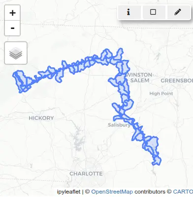
So instead we will buffer the river first:
tools.v_buffer(input="river", output="river_buffer", distance=0.01)
tools.v_select(
ainput="WBDHU12",
binput="river_buffer",
output="river_basins",
operator="overlap",
)
basin_map = gj.InteractiveMap()
basin_map.add_vector("river_basins")
basin_map.add_vector("river")
basin_map.show()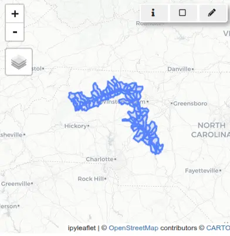
The rest of the workflow will be done in a CRS used in North Carolina (EPSG 3358).
Reprojecting vector data to a CRS used in North Carolina
Since we want our project to use a different CRS more suitable for our study area (EPSG:3358 for North Carolina), we will create it now:
nc_project = Path(path) / "NC"
gs.create_project(nc_project, epsg="3358")
session = gj.init(nc_project)In preparation for parallel importing of soil data, we will specify the database connection to use per-map SQLite database instead of a single database for the entire mapset (the default). This will prevent concurrent writing to a single file-based database.
tools.db_connect(
driver="sqlite", database="$GISDBASE/$LOCATION_NAME/$MAPSET/vector/$MAP/sqlite.db"
)We will reproject the river subwatersheds vector with v.proj:
tools.v_proj(input="river_basins", project="hydro")Downloading NED elevation data
We will use GRASS addon r.in.usgs to download and import NED layer using USGS TNM Access API.
tools.g_extension(extension="r.in.usgs")First, we will set the computational region to match the river subwatersheds and then list the latest available datasets for that region (the output at the time of creating this tutorial, it may vary later on):
tools.g_region(vector="river_basins")
print(
tools.r_in_usgs(
product="ned",
ned_dataset="ned13sec",
ned_release="current",
flags="i",
output_directory=os.getcwd(),
).text
)USGS file(s) to download:
-------------------------
Total download size: 2.90 GB
Tile count: 6
USGS SRS: wgs84
USGS tile titles:
USGS 1/3 Arc Second n36w080 20100929
USGS 1/3 Arc Second n36w081 20100929
USGS 1/3 Arc Second n36w082 20100929
USGS 1/3 Arc Second n37w080 20100929
USGS 1/3 Arc Second n37w081 20100929
USGS 1/3 Arc Second n37w082 20100929
-------------------------Now we will download and import the datasets.
tools.r_in_usgs(
product="ned",
ned_dataset="ned13sec",
ned_release="current",
output_directory=os.getcwd(),
output_name="ned",
)Let’s now compute the erosion/deposition for one of the subwatersheds.
Flow and erosion modeling for a single subwatershed
We begin our analysis by selecting a single HUC12 subwatershed from the set of intersected basins. This subset will be used to test the erosion and deposition simulation workflow. For all outputs, we will use unique names with the subwatershed code as a prefix. That will help us with parallelization later on.
Use v.db.select to retrieve the list of HUC12 codes from the attribute table that has “areasqkm” and “huc12” attributes. Extract the smallest HUC12 polygon using v.extract.
# Select for example the smallest huc12
subwatersheds = tools.v_db_select(map="river_basins", format="json")["records"]
huc12 = min(subwatersheds, key=lambda x: x["areasqkm"])["huc12"]
tools.v_extract(
input="river_basins",
output=f"basin_{huc12}",
where=f"huc12 == '{huc12}'",
flags="t",
)Set the computational region with g.region to match the extent of the basin and align resolution with the elevation raster.
tools.g_region(raster="ned", vector=f"basin_{huc12}")Convert the selected vector to a raster using v.to.rast.
tools.v_to_rast(input=f"basin_{huc12}", output=f"basin_{huc12}", use="val")Apply a raster mask with MaskManager to restrict all subsequent raster operations to this subwatershed. MaskManager is new in GRASS version 8.5. Alternatively, you can use r.mask to set a mask.
mask = gs.MaskManager(mask_name=f"basin_{huc12}")
mask.activate()Mannings roughness
Next, we will estimate Manning’s roughness coefficient from the NLCD landcover using r.manning addon tool.
First, reproject NLCD from a “nlcd” project to this project (see NLCD legend):
tools.r_proj(project="nlcd", mapset="PERMANENT", input="nlcd", output=f"nlcd_{huc12}")
nlcd_map = gj.Map()
nlcd_map.d_rast(map=f"nlcd_{huc12}")
nlcd_map.show()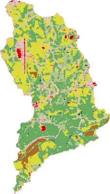
To derive manning’s roughness, we will use lookup table [1] that is more suitable for shallow flow than the HEC-RAS 2D table for floodplain modeling.
tools.g_extension(extension="r.manning")
tools.r_manning(
input=f"nlcd_{huc12}",
output=f"mannings_{huc12}",
landcover="nlcd",
source="kalyanapu",
)
manning_map = gj.Map()
manning_map.d_rast(map=f"mannings_{huc12}")
manning_map.d_legend(
raster=f"mannings_{huc12}",
flags="t",
at=[10, 15, 40, 95],
title="Roughness",
fontsize=12,
)
manning_map.show()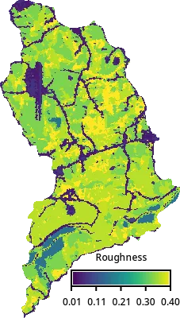
Rainfall excess
Then we will estimate rainfall excess and to do that we will first process soil data for our area using r.in.ssurgo addon tool. Since we need a fairly large area, we will first download the soil data itself for North Carolina from Gridded Soil Survey Geographic (gSSURGO) Database and then have r.in.ssurgo extract Hydrologic Soil Group for our area.
NoteWhat is Hydrologic Soil Group?
Hydrologic Soil Group (HSG) classifies soils based on their minimum infiltration rate and potential for rainfall runoff. For smaller areas, r.in.ssurgo can download the data directly using the Soil Data Access (SDA) API.
tools.g_extension(extension="r.in.ssurgo")
tools.r_in_ssurgo(
ssurgo_path="gSSURGO_NC.zip",
soils=f"soils_{huc12}",
hydgrp=f"hydgrp_{huc12}",
nprocs=1,
)
soil_map = gj.Map()
soil_map.d_rast(map=f"hydgrp_{huc12}")
soil_map.d_legend(
raster=f"hydgrp_{huc12}",
at=[0, 30, 0, 10],
title="HSG",
fontsize=12,
flags="cn",
)
soil_map.show()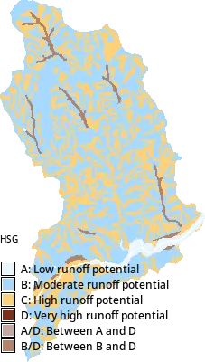
With the soil and landcover data available, we will generate Curve Number, which is an empirical parameter to estimate surface runoff. This will allow us to translate rainfall and land characteristics into the runoff input for SIMWE.
NoteWhat is a Curve Number?
The SCS Curve Number (CN) method is an empirical approach developed by the USDA Soil Conservation Service (now NRCS), for estimating direct runoff (effective rainfall) from a rainfall event.
The curve number is a dimensionless parameter (0–100) that summarizes a surface’s runoff potential based on soil type (hydrologic soil group), land cover, and antecedent moisture conditions. Low values (~30–50) mean high infiltration/low runoff (e.g. sandy soils, forest); high values (~80–98) mean low infiltration/high runoff (e.g. clay, pavement, urban surfaces).
tools.g_extension(extension="r.curvenumber")
tools.r_curvenumber(
landcover=f"nlcd_{huc12}",
landcover_source="nlcd",
soil=f"hydgrp_{huc12}",
output=f"curvenumber_{huc12}",
)
cn_map = gj.Map()
cn_map.d_rast(map=f"curvenumber_{huc12}")
cn_map.d_legend(
raster=f"curvenumber_{huc12}",
at=[10, 15, 40, 95],
flags="t",
title="CN",
fontsize=12,
)
cn_map.show()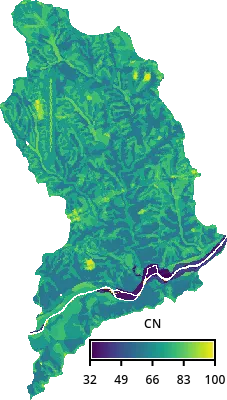
To get an approximate precipitation depth, we will model a 10-year storm event that lasts 1 hour, using data from NOAA Atlas 14 Precipitation Frequency Data Server.
tools.g_extension(extension="r.noaa.atlas14")
duration = 60
depths = tools.r_noaa_atlas14(
mode="point", statistic="depth", units="metric", format="json"
)
depth = [
row["values"]
for row in depths["table"]["rows"]
if row["duration"] == f"{duration}-min"
][0]["10"]
print(f"Depth: {depth} mm")Depth: 54.0 mmWe will then create an input precipitation depth raster, assuming uniform rainfall:
tools.r_mapcalc(expression=f"rainfall_{huc12} = {depth}")With that we estimate runoff (rainfall excess) with r.runoff, which estimates for each cell total runoff depth in mm for the duration of the storm using SCS Curve Number method.
tools.g_extension(extension="r.runoff")
duration_h = duration / 60
tools.r_runoff(
rainfall=f"rainfall_{huc12}",
duration=duration_h,
curve_number=f"curvenumber_{huc12}",
runoff_depth=f"runoff_depth_{huc12}",
)
tools.r_mapcalc(expression=f"runoff_{huc12} = runoff_depth_{huc12} / {duration_h}")
runoff_map = gj.Map()
runoff_map.d_rast(map=f"runoff_{huc12}")
runoff_map.d_legend(
raster=f"runoff_{huc12}",
at=[10, 15, 40, 95],
flags="t",
title="Runoff [mm/h]",
fontsize=12,
)
runoff_map.show()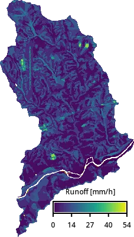
Hydrologic and sediment modeling
Run hydrologic and sediment simulations for the selected subwatershed. First, simulate overland flow using r.sim.water with inputs for topography, Manning’s coefficients, and rainfall intensity. Running the simulation may take a while.
tools.r_sim_water(
elevation="ned",
depth=f"depth_{huc12}",
niterations=duration,
man=f"mannings_{huc12}",
rain=f"runoff_{huc12}",
)
simwe_map = gj.Map()
simwe_map.d_rast(map=f"depth_{huc12}")
simwe_map.d_legend(
raster=f"depth_{huc12}",
flags="t",
at=[10, 15, 40, 95],
title="Depth [m]",
fontsize=12,
)
simwe_map.show()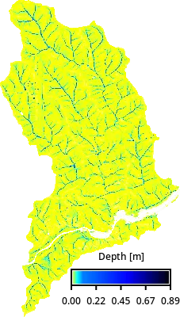
Then, define parameters for sediment transport and run r.sim.sediment to compute erosion and deposition patterns. We will trim the resulting raster’s edges to avoid extreme values at the edge. The additional parameters for sediment erosion modeling are based on WEPP model, here we use just a single-value estimate.
tools.r_mapcalc(expression=f"transport_capacity_{huc12} = 0.001")
tools.r_mapcalc(expression=f"detachment_coef_{huc12} = 0.001")
tools.r_mapcalc(expression=f"shear_stress_{huc12} = 0.01")
tools.r_sim_sediment(
elevation="ned",
water_depth=f"depth_{huc12}",
detachment_coeff=f"detachment_coef_{huc12}",
transport_coeff=f"transport_capacity_{huc12}",
shear_stress=f"shear_stress_{huc12}",
niterations=duration,
erosion_deposition=f"erdep_tmp_{huc12}",
nwalkers=10 * gs.region()["cells"],
)
tools.r_grow(input=f"erdep_tmp_{huc12}", output=f"erdep_{huc12}", radius=-2.01)
erdep_map = gj.Map()
erdep_map.d_rast(map=f"erdep_{huc12}")
erdep_map.d_legend(
raster=f"erdep_{huc12}",
flags="t",
at=[10, 15, 40, 95],
range=[-0.5, 0.5],
digits=2,
title="Erosion/dep. [kg/m2s]",
fontsize=12,
)
erdep_map.show()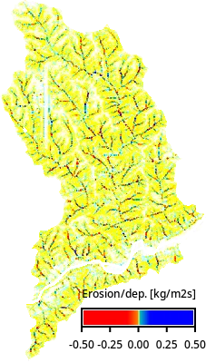
Calculate total erosion for the subwatershed. Negative values from r.sim.sediment output are treated as erosion and converted to sediment mass. Summary statistics are computed using r.univar.
# Erosion: extract negative values and convert to positive mass [kg/m^2]
tools.r_mapcalc(
expression=f"erosion_{huc12} = if(erdep_{huc12} < 0, abs(erdep_{huc12}) * {duration}, null())"
)
erosion = tools.r_univar(map=f"erosion_{huc12}", format="json")
print(erosion["mean"])Deactivate the active raster mask, restoring operations to apply across the full computational region.
mask.deactivate()Display water depth (depth) and erosion-deposition (erdep) rasters for the selected subwatershed.
basin_map = gj.InteractiveMap()
basin_map.add_raster(f"depth_{huc12}")
basin_map.add_raster(f"erdep_{huc12}")
basin_map.show()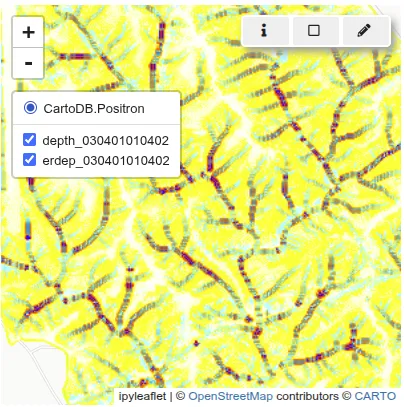
Parallelized hydrologic and sediment modeling
To efficiently model erosion and deposition across a large number of HUC12 subwatersheds, we will use the workflow we just ran and create a script that uses Python’s multiprocessing module to parallelize the workflow. Each subwatershed is processed independently in its own environment, which allows computations to run concurrently without interference.
Each subwatershed needs to set different computational region and mask. However those setting are usually global for each mapset. So, to use different regions and masks for each parallel process, we will use the region and mask context managers.
Computational region is handled using
RegionManager, a context manager for setting and managing computational region, making it possible to have custom region for the current process. This feature is available only since GRASS 8.5.with gs.RegionManager(vector=f"basin_{huc12}"): # Run actual computation in the specified region. tools.r_sim_water(...)Masking is handled using
MaskManager, a context manager for setting and managing raster mask, making it possible to have custom mask for the current process. This feature is available only since GRASS 8.5.with gs.MaskManager(mask_name=f"basin_{huc12}"): # Run actual computation with active mask. tools.r_sim_water(...)
Putting it all together
We will put all the pieces together into a script that runs each subwatershed in parallel. The resulting statistics for each subwatershed are collected and stored in a JSON file for further analysis.
%%writefile script.py
import os
import json
from pathlib import Path
from multiprocessing import Pool, cpu_count
from functools import partial
from tqdm import tqdm
import grass.script as gs
from grass.tools import Tools
def compute(huc12, precipitation_depth, duration, ssurgo_path):
duration_h = duration / 60
# set overwrite to True to rerun the workflow
tools = Tools(overwrite=True, quiet=True)
tools.v_extract(
input="river_basins",
output=f"basin_{huc12}",
where=f"huc12 == '{huc12}'",
flags="t",
)
# Set the computational region to match the basin
# while using the NED raster cell size and alignment
with gs.RegionManager(vector=f"basin_{huc12}", raster="ned"):
tools.v_to_rast(
input=f"basin_{huc12}",
output=f"basin_{huc12}",
use="val",
)
tools.r_proj(
project="nlcd",
mapset="PERMANENT",
input="nlcd",
output=f"nlcd_{huc12}",
)
with gs.MaskManager(mask_name=f"basin_{huc12}"):
# Run actual computation with active mask.
tools.r_manning(
input=f"nlcd_{huc12}",
output=f"mannings_{huc12}",
landcover="nlcd",
source="kalyanapu",
)
tools.r_in_ssurgo(
ssurgo_path=ssurgo_path,
soils=f"soils_{huc12}",
hydgrp=f"hydgrp_{huc12}",
nprocs=1,
)
tools.r_curvenumber(
landcover=f"nlcd_{huc12}",
landcover_source="nlcd",
soil=f"hydgrp_{huc12}",
output=f"curvenumber_{huc12}",
)
tools.r_mapcalc(expression=f"rainfall_{huc12} = {precipitation_depth}")
tools.r_runoff(
rainfall=f"rainfall_{huc12}",
duration=duration_h,
curve_number=f"curvenumber_{huc12}",
runoff_depth=f"runoff_depth_{huc12}",
)
tools.r_mapcalc(
expression=f"runoff_{huc12} = runoff_depth_{huc12} / {duration_h}"
)
tools.r_sim_water(
elevation="ned",
depth=f"depth_{huc12}",
niterations=duration,
man=f"mannings_{huc12}",
rain=f"runoff_{huc12}",
)
tools.r_mapcalc(expression=f"transport_capacity_{huc12} = 0.001")
tools.r_mapcalc(expression=f"detachment_coef_{huc12} = 0.001")
tools.r_mapcalc(expression=f"shear_stress_{huc12} = 0.01")
region = tools.g_region(flags="p", format="json")
tools.r_sim_sediment(
elevation="ned",
water_depth=f"depth_{huc12}",
detachment_coeff=f"detachment_coef_{huc12}",
transport_coeff=f"transport_capacity_{huc12}",
shear_stress=f"shear_stress_{huc12}",
niterations=duration,
erosion_deposition=f"erdep_tmp_{huc12}",
nwalkers=10 * region["cells"],
)
tools.r_grow(
input=f"erdep_tmp_{huc12}",
output=f"erdep_{huc12}",
radius=-2.01,
)
# Erosion: extract negative values and convert to positive mass [kg/m^2]
tools.r_mapcalc(
expression=f"erosion_{huc12} = if(erdep_{huc12} < 0, abs(erdep_{huc12}) * {duration}, 0)",
)
erosion = tools.r_univar(map=f"erosion_{huc12}", format="json", flags="e")
return {
"huc12": huc12,
"erosion_mean": erosion["mean"],
"erosion_median": erosion["median"],
"erosion_total": erosion["sum"] * region["nsres"] * region["ewres"],
}
if __name__ == "__main__":
tools = Tools()
# The entire workflow will run in parallel,
# so this limits the number of threads each individual tool can use to 1.
tools.g_gisenv(set="NPROCS=1")
basins = tools.v_db_select(format="json", map="river_basins")["records"]
huc12s = [basin["huc12"] for basin in basins]
# single depth value for entire area
duration = 60
precipitation = tools.r_noaa_atlas14(
mode="point", statistic="depth", units="metric", format="json"
)
precipitation_depth = [
row["values"]
for row in precipitation["table"]["rows"]
if row["duration"] == f"{duration}-min"
][0]["10"]
ssurgo_path = str(Path(__file__).parent / "gSSURGO_NC.zip")
worker = partial(
compute,
precipitation_depth=precipitation_depth,
duration=duration,
ssurgo_path=ssurgo_path,
)
# set the number of processes to be used for the computation in total
with Pool(processes=cpu_count()) as pool:
result = list(tqdm(pool.imap(worker, huc12s), total=len(huc12s)))
with open("result.json", "w") as fp:
json.dump(result, fp)Now execute the script, it will take some time.
%run script.pyLoad the resulting JSON file into a pandas dataframe and normalize the results, so that we can easily compare the subwatersheds.
import pandas as pd
import json
with open("result.json") as f:
stats = json.load(f)
df = pd.DataFrame(stats)
df["normalized_erosion"] = df.erosion_mean / max(df.erosion_mean)
dfLoad the subwatershed layers into geopandas for visualization. Join the dataframe with the simulation values using the huc12 key and from all NC subwatersheds filter only those we initially selected that have now computed erosion values.
import geopandas as gpd
gdf = gpd.read_file(hydro_filename, layer="WBDHU12")
gdf = gdf.merge(df, on="huc12", how="left")
# drop loaddate column because it's timestamp type
# not supported by JSON, would later fail
gdf = gdf.drop(columns=["loaddate"])
# keep only subwatersheds with computed values
gdf = gdf[gdf["erosion_total"].notna()]Let’s visualize the data with folium:
import folium
import branca.colormap as cm
metric = "normalized_erosion"
color_scale = cm.linear.OrRd_09.scale(min(gdf[metric]), max(gdf[metric]))
color_scale.caption = "Min-max normalized mean erosion"
# get region center as latitude, longitude
region = tools.g_region(vector="river_basins", format="json", flags="b")
m = folium.Map(location=[region["ll_clat"], region["ll_clon"]], zoom_start=9)
tooltip = folium.GeoJsonTooltip(
fields=["huc12", metric],
aliases=["HUC12", "Normalized mean erosion:"],
localize=True,
sticky=False,
labels=True,
style="""
background-color: #F0EFEF;
border: 2px solid black;
border-radius: 3px;
box-shadow: 3px;
""",
max_width=800,
)
g = folium.GeoJson(
gdf,
style_function=lambda x: {
"fillColor": color_scale(x["properties"][metric]),
"color": "black", "weight": 1,
"fillOpacity": 0.5,
},
tooltip=tooltip,
).add_to(m)
color_scale.add_to(m)
folium.LayerControl().add_to(m)
m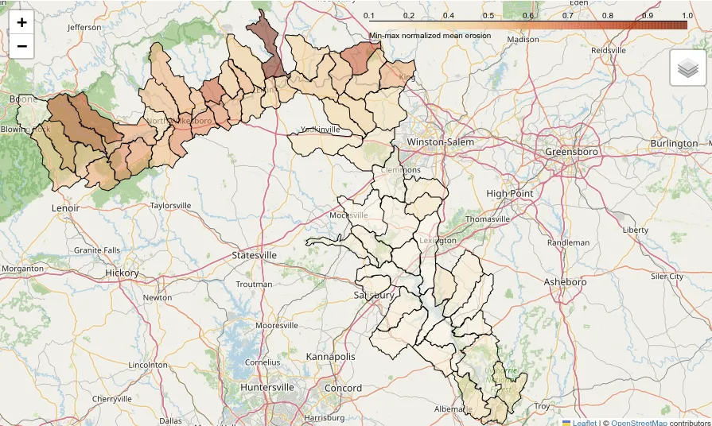
We can now identify subwatersheds that have larger erosion values and are potentially the source of increased sediment loads downstream, contributing to water quality degradation and habitat disruption.
Acknowledgements
The development of this tutorial was supported by NSF Award #2322073, granted to Natrx, Inc. and USDA NRCS award NR233A750023C043.
References
[1]
Alfred J Kalyanapu, Steven J Burian, and Timothy N McPherson. 2009. Effect of land use-based surface roughness on hydrologic model output. Journal of Spatial Hydrology 9, 2 (2009).